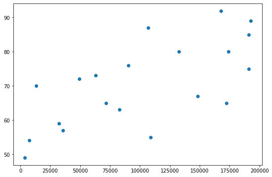
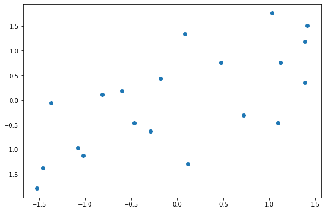

โดย ชิตพงษ์ กิตตินราดร | ธันวาคม 2562
Machine learning algorithm หลายตัว เช่น SVM และ Neural Networks จะทำงานได้ดีเมื่อข้อมูล Input อยู่ใน Scale มาตรฐาน นั่นคือมีค่าเฉลี่ย Mean เท่ากับ 0 และ Variance เท่ากับ 1 ดังนั้นหากเราใช้ Algorithm เหล่านี้ หรือลองเทรนโมเดลแล้วได้ค่าความแม่นยำต่ำ หรือใช้เวลานานมากในการเทรน ให้ลองเปลี่ยน Scale ของ Feature ดู
Feature scaling มีหลายสูตร แต่สูตรที่ใช้งานได้ดีและเป็นที่นิยม คือสูตร StandardScaler ใน preprocessing module ของ scikit-learn โดย StandardScaler จะมีสูตรดังนี้:
xx ทั้งหมดx ทั้งหมด ซึ่งคิดมาจาก Square root ของ Varianceโดย Variance () มีสูตรคือ:
ค่า x ที่ Scale แล้ว จะกระจายตัวออกรอบๆ 0 และรวมกันจะมีส่วนเบี่ยงเบนมาตรฐานเท่ากับ 1 ซึ่งเดี๋ยวจะพิสูจน์ให้ดู
เรามาลองทำ StandardScaler กัน โดยโหลดข้อมูลมาก่อน:
import numpy as np
import pandas as pd
from sklearn.preprocessing import scale
from sklearn.preprocessing import StandardScaler
import matplotlib.pyplot as plt
# Load the dataset
df = pd.read_csv("data/life_expectancy.csv")
print(df.head())
ซึ่งเป็นชุดข้อมูลเดิมจากบทที่ 5 มีหน้าตาดังนี้:
Income Happiness Area LifeExpectancy
0 132546 High BKK 80
1 190998 Medium NE 75
2 49308 Medium S 72
3 32062 Low NE 59
4 71707 High BKK 65
เราจะลองทำ Scaling เฉพาะ Feature "Income" และ Label "LifeExpectancy" โดยในความจริงเราไม่จำเป็นต้อง Scale label แต่จะทำให้ดูเพื่อพล็อต Scatterplot แสดงว่าความสัมพันธ์ของข้อมูลยังคงเหมือนเดิมหลังจาก Scale แล้ว
สมมุติว่าจะสร้างโมเดลเฉพาะความสัมพันธ์ระหว่าง Income กับ LifeExpectancy ลองพล็อต Scatterplot ดูดังนี้:
# Plot Income against LifeExpectancy before scaling
plt.scatter(df["Income"], df["LifeExpectancy"])
ได้ผลดังนี้:

ก่อนเราจะทำการ Scale มาเตรียมข้อมูลให้เป็น numpy array กันก่อนเพื่อให้ไม่ต้องเรียกคอลัมน์จาก pandas ทุกๆ ครั้ง:
# Prep X and y
x = np.array(df["Income"]).reshape(-1,1)
y = np.array(df["LifeExpectancy"]).reshape(-1,1)
print(x.shape)
print(y.shape)
ได้มิติ x และ y เป็น (20, 1) ทั้งคู่
ต่อมาเราจะ Scale ข้อมูลสองหมวดนี้กันเลย โดยมี 2 วิธีดังนี้:
1) Function scale
เป็นวิธีที่ง่ายและสั้น ทำได้โดย:
# Method 1: Apply scaling using scale function
x_scaled = scale(x)
y_scaled = scale(y)
print(x_scaled[:5, :])
print(y_scaled[:5, :])
ได้ผลว่า:
[[ 0.47792414]
[ 1.38439361]
[-0.81292487]
[-1.08037462]
[-0.46556277]]
[[ 0.77057895]
[ 0.35850465]
[ 0.11126006]
[-0.96013313]
[-0.46564397]]
2) Class StandardScaler
วิธีนี้จะใช้ Transformer API คำนวน Mean และ Standard deviation ก่อน เพื่อนำค่าทั้งสองไปใช้ประโยชน์ภายหลังได้ เช่นการเอาไป Scale test set ให้มีลักษณะการกระจายตัวเหมือน Train set ซึ่งจะอธิบายความสำคัญของความสามารถในตอนจบบทนี้
วิธีการคือ:
# Method 2.1: Apply scaling using StandardScaler class (fit then transform)
x_scaler = StandardScaler().fit(x)
y_scaler = StandardScaler().fit(y)
print("Mean of x is:", x_scaler.mean_)
print("Variance of x is:", x_scaler.var_)
print("Standard deviation of x is:", x_scaler.scale_)
x_scaled = x_scaler.transform(x)
y_scaled = y_scaler.transform(y)
print(x_scaled[:5, :])
print(y_scaled[:5, :])
เราฟิต StandardScaler กับข้อมูลก่อน ซึ่งจะเป็นการเก็บ Parameter ที่ได้มาไว้ใน Object ก่อน เราสามารถเรียก Mean, Variance, และ Standard deviation มาดูได้โดยใช้ Method .mean_, .var_, และ .scale_ โดยได้คำตอบคือ:
Mean of x is: [1.11022302e-17]
Variance of x is: [1.]
Standard deviation of x is: [1.]
สังเกตว่า Mean เท่ากับ ซึ่งมีค่าน้อยมากๆ เข้าใกล้ 0 นั่นเอง
จากนั้นเราค่อยเอา Object ที่ฟิตแล้ว มา Transform เพื่อให้ได้ Array ที่ Scale แล้ว ได้ผลคือ:
[[ 0.47792414]
[ 1.38439361]
[-0.81292487]
[-1.08037462]
[-0.46556277]]
[[ 0.77057895]
[ 0.35850465]
[ 0.11126006]
[-0.96013313]
[-0.46564397]]
สังเกตว่าเท่ากับวิธีที่ 1
อนึ่ง เราสามารถควบ .fit และ .transform เอาไว้ในคำสั่งเดียว คือ .fit_transform ซึ่งกระชับกว่า ทำได้โดย:
# Method 2.2: Apply scaling using StandardScaler class (fit_transform)
scaler = StandardScaler()
x_scaled = scaler.fit_transform(x)
y_scaled = scaler.fit_transform(y)
print(x_scaled[:5, :])
print(y_scaled[:5, :])
จะได้ผลเหมือนเดิม
พอเรา Scale ทั้ง x และ y แล้ว ก็มาลองทำ Scatterplot ดู:

พบว่าหน้าตาความสัมพันธ์และระยะห่างระหว่างข้อมูลแต่ละรายการนั้นเหมือนเดิมทุกประการ สิ่งเดียวที่ต่างออกไปคือ Scale บนแกน x และ y ที่ตอนนี้ข้อมูลจะกระจายตัวรอบๆ ค่าเฉลี่ย 0 โดยจะลองเช็คอีกทีก็ได้:
# Check that all means is 0 and std is 1.
print("All x has mean of:", x_scaled.mean(axis=0))
print("All x has standard deviation of:", x_scaled.std(axis=0))
แน่นอนว่าคำตอบคือ:
All x has mean of: [1.11022302e-17]
All x has standard deviation of: [1.]
ข้อสำคัญของการทำ Feature scaling คือต้อง Scale ทั้งข้อมูล Train set และ Test set โดยใช้ Mean และ Variance เดียวกัน เพื่อรักษารูปแบบการกระจายตัวของข้อมูลทั้งสองชุดให้เหมือนกัน อย่างไรก็ตาม ไม่ควร Scale ข้อมูลทั้งหมดทีเดียวและค่อยแยก Train set กับ Test set เพราะการทำอย่างนั้นจะทำให้ข้อมูลการกระจายตัวของ Test set "รั่ว" ไปส่งผลต่อการ Scale train set
ดังนั้น วิธีที่ถูกต้องคือ:
StandardScaler เรียก .fit เข้ากับ X_train แล้วผลที่ได้ไว้เป็น Instance object.transform จาก Instance ในข้อ 1 โดยใส่ Argument เป็น X_train เพื่อเปลี่ยนชุด X_train ให้ได้ Scale.transform จาก Instance ในข้อ 1 โดยใส่ Argument เป็น X_test ซึ่งเป็นการเรียก Parameter (Mean, variance) ที่เคยฟิตจาก X_train มาใช้กับ X_testการทำ Feature scaling นั้นยังมีวิธีอื่นๆ อีก เช่น:
MinMaxScaler เป็นการ Scale ให้ข้อมูลมีค่าระหว่างค่าต่ำสุดและสูงสุด เหมาะกับข้อมูลที่มี Standard deviation น้อยมากๆRobustScaler เป็นการ Scale โดยใช้ Median และ Quantile แทน Mean กับ Variance เพื่อให้ค่าที่ได้ไม่ได้รับอิทธิพลจากข้อมูลที่มีค่าโดดจากพวก (Outliers)Normalizer เป็นการ Scale ให้ข้อมูลแต่ละรายการมี Norm เท่ากับ 1 โดยไม่เกี่ยวกับข้อมูลรายการอื่น เหมาะกับงาน Text classification และ Clusteringแนะนำให้ศึกษาเพิ่มจากคู่มือของ scikit-learn และแหล่งข้อมูลอื่นๆ ได้เอง
บทต่อไปจะเข้าสู่รายละเอียดของการเทรนโมเดล โดยจะพูดถึงปัญหา Bias และ Variance และวิธีแก้
หน้าแรก | บทที่ 5 Categorical Encoding | บทที่ 7 Bias and Variance